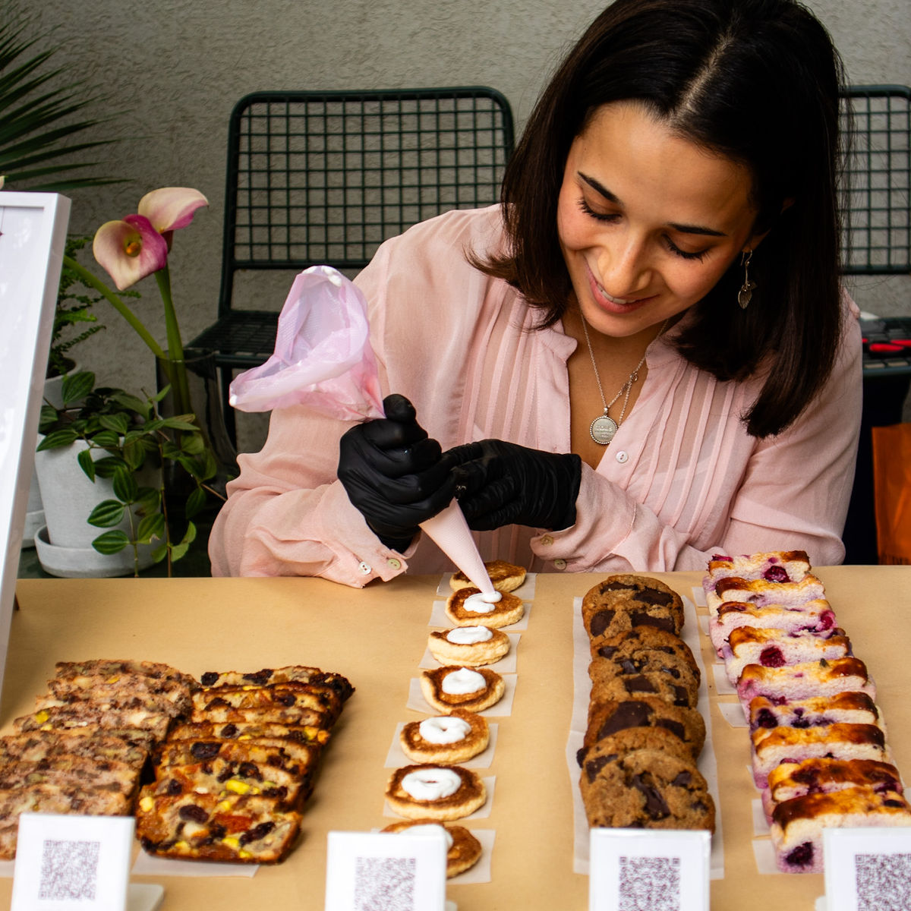
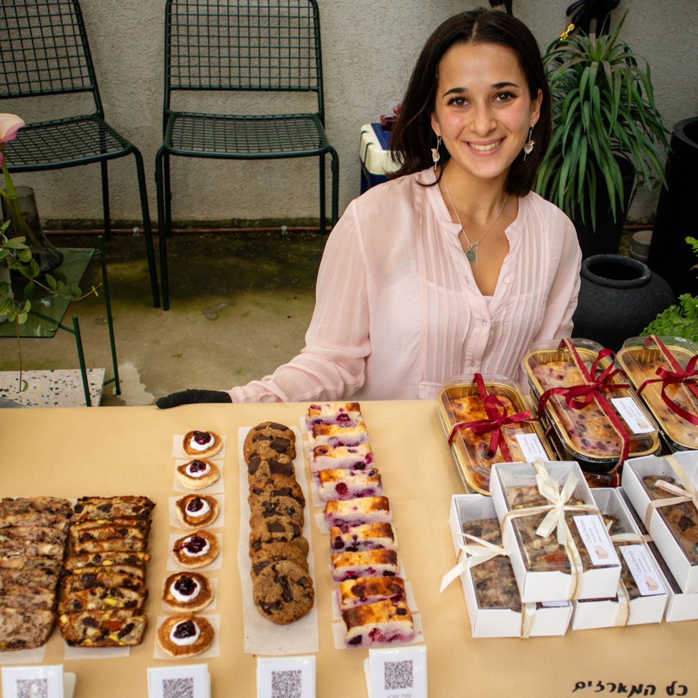

עליי ועל הבחירה בקינוחים בריאים
גדלתי בבית שבו אורח חיים בריא היה חלק מהבית. בגיל 13 התמודדתי עם עודף משקל, ובעזרת תזונאי מדהים בשם רן צורי גיליתי שלא מדובר רק במספרים או קלוריות – אלא בדרך חיים מלאה שמחברת בין גוף, נפש ותזונה. הפגישות איתו עוררו בי השראה, סקרנות והשאירו בי רצון עז להעמיק בתחום.
עם השנים אימצתי את הידע שלמדתי מרן והתחלתי ליישם אותו לבד. אך תמיד היה קצת חסר המתוק בבית, כמו למשל ביום ההולדת של ההורי שרציתי שהם יאכלו עוגה יפה ומזינה, או אפילו כשמזמינים אורחים בימי שישי תמיד רציתי שכולם יאכלו מהמגש. לכן, אספתי מתכונים, שיניתי, שיפרתי ויצרתי חדשים. חלקם בהשראת אחרים (תמיד עם קרדיט כמובן), וחלקם לגמרי מקוריים. המטרה שלי ברורה: להנגיש קינוחים טעימים, יפים ומזינים גם לאנשים שמעדיפים תזונה טבעית ונקייה, וגם לאנשים עם מגבלות תזונה כמו צליאק או סוכרת. בנוסף, מאז תקופת הקורונה גיליתי מחדש את האהבה שלי לאסתטיקה של קינוחים – כי בעיניי חשוב לא פחות שהקינוח ייראה מרשים ויפה כשמניחים אותו על השולחן, אני מאמינה שאנחנו אוכלים גם עם העיניים!


פה כדי להקשיב לכם
כתובת מייל *